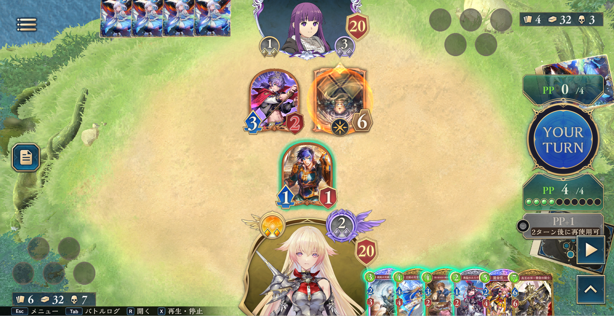
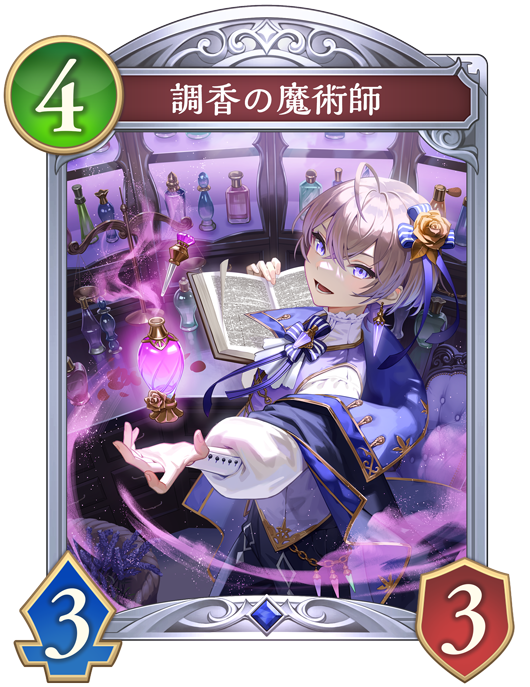
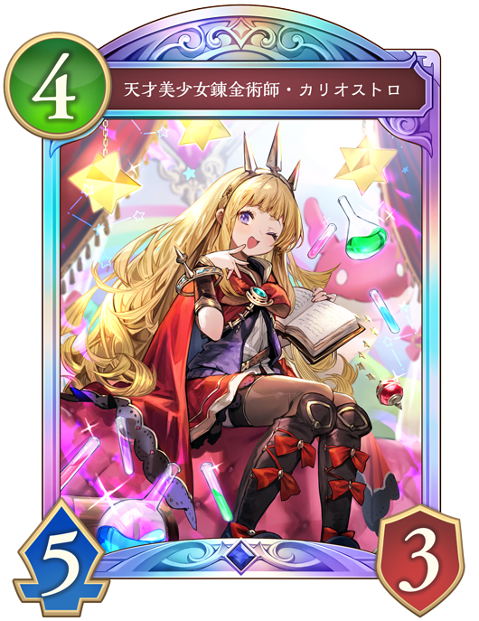
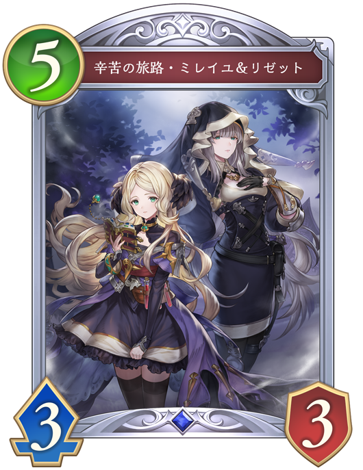
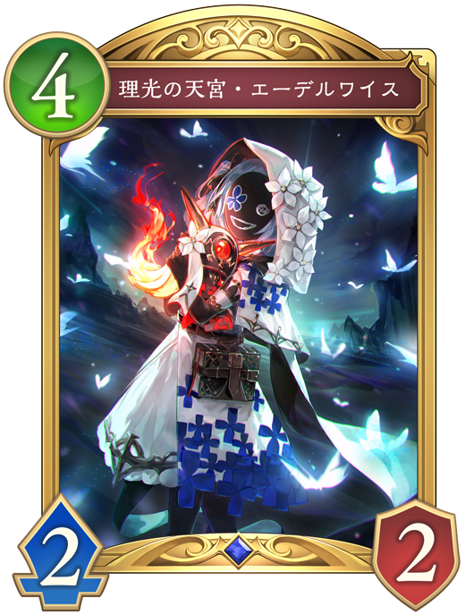
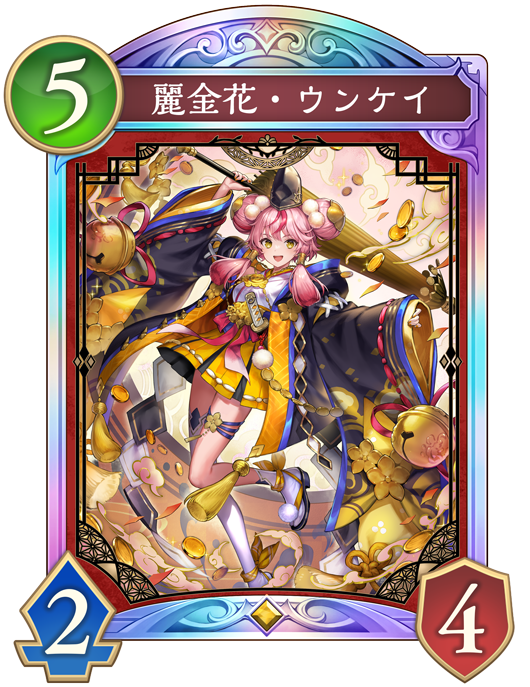
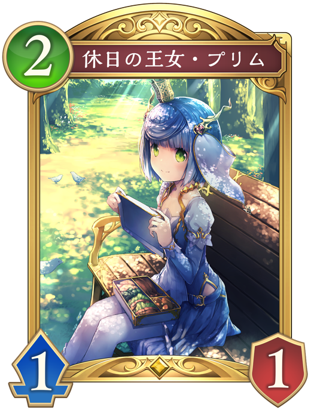
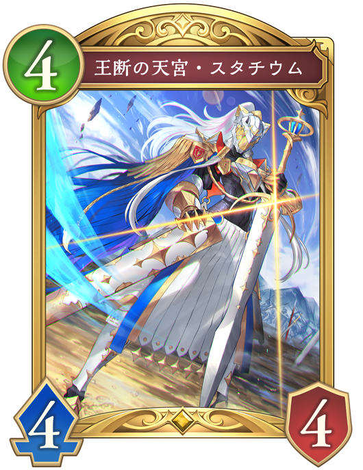
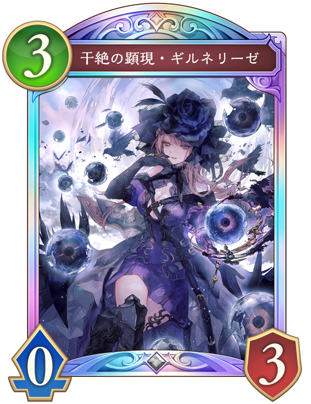

調香の魔術師ファンファーレと進化時でフォロワーに3点ダメージと土の印を+1される。 そのため、フォロワーを最大3面取りながら土の印を増やされてしまう。

天才美少女錬金術師・カリオストロファンファーレで土の印を+2し「アルス・マグナ」を手札に加えるが、奥義が溜まっていないため危険度は高くない。

辛苦の旅路・ミレイユ&リゼット2体の「辛苦の旅路・ミレイユ&リゼット」が土の秘術2で進化権を使わずに進化する。 進化回数を2回増やせ、「天使長の後継・サンダルフォン」の直接召喚や手札に「天才美少女錬金術師・カリオストロ」の奥義に大きく近づく。

理光の天宮・エーデルワイスファンファーレで土の秘術2で進化し、進化したときにフォロワーにランダムダメージ4点と2PP回復する。 ダメージがランダムなため運要素があり、更に土の印を消費するためそこまで危険度は高くない。
この状況では相手は先攻5ターン目で土の印が3以上あるため、「辛苦の旅路・ミレイユ&リゼット」がプレイされる可能性が高い。
5/5の高いスタッツが2体並び、進化も2回分稼げるため「天使長の後継・サンダルフォン」の直接召喚や「天才美少女錬金術師・カリオストロ」の奥義などが早まる。
「辛苦の旅路・ミレイユ&リゼット」がプレイしにくい盤面を作ることが有効である。

「麗金花・ウンケイ」を出して、ファンファーレで消滅させる。盤面に1体しか残っておらず、「辛苦の旅路・ミレイユ&リゼット」を簡単にプレイされ返されてしまう。 進化権は使っていないので、リソースの温存は出来ている。

「休日の王女・プリム」を出した後、手札に加わった「静かなるメイド・ノーニャ」も出し、「休日の王女・プリム」を進化してフォロワーを倒す。「静かなるメイド・ノーニャ」が必殺を持つため、1体は相打ちでき盤面を有利に取ることができる

「王断の天宮・スタチウム」を進化してフォロワーを倒しつつ盤面展開する。「辛苦の旅路・ミレイユ&リゼット」は5/5のため、進化すると6/6である「王断の天宮・スタチウム」がいると2体で攻撃しなければならないので非常にプレイしにくくなる。 また、自分の盤面も展開できるため強い盤面により処理を強要することができる。

「干絶の顕現・ギルネリーゼ」を出して、ファンファーレと進化時で相手のフォロワーを選択して倒す。盤面に1体しか残っておらず、「辛苦の旅路・ミレイユ&リゼット」を簡単にプレイされ返されてしまう。 さらに進化権も使ってしまっており、「干絶の顕現・ギルネリーゼ」のドレインも生かせていない。
「辛苦の旅路・ミレイユ&リゼット」は5/5のため、体力6以上のフォロワーを残すことがプレイしにくくなり有効である。
そのため、進化すると6/6である「王断の天宮・スタチウム」をプレイすることは有効度が高い。
また、自分の盤面も展開できるため残ったフォロワーで攻めることができる。